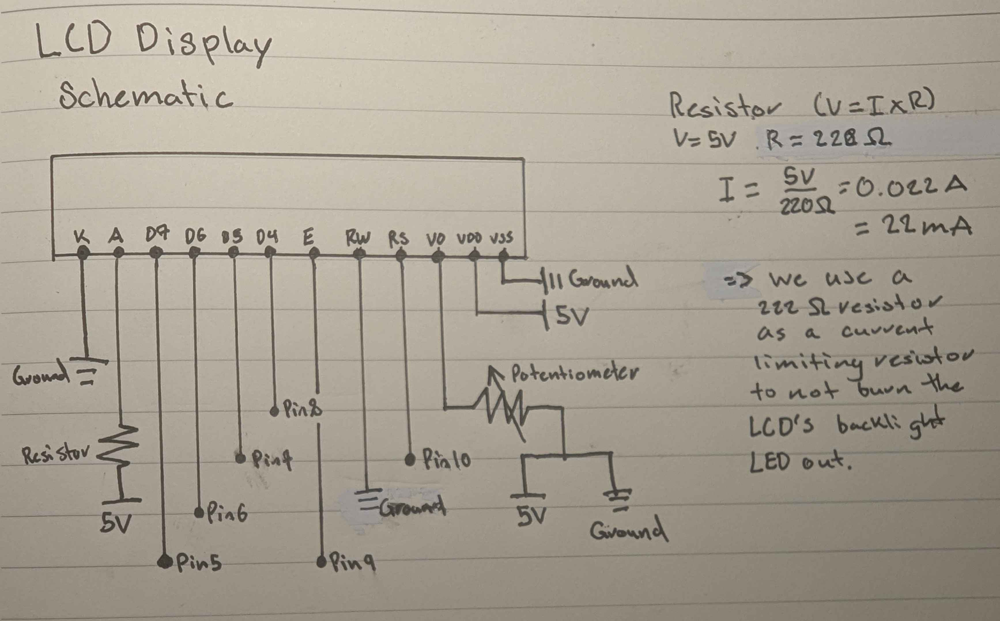

Schematics & Resistors



The LCD display is the most intricate of the three circuits, as it uses a significant
number of GPIO ports on the Arduino. Most notably are three components that allow for its
functionality. A potentiometer connected to the "V0" pin allows for adjusting the
screen's contrast, ensuring the text is visible by adjustment. Second, a 220-ohm resistor
serves as a current-limiting resistor to protect the LCD's backlight from burning
out. Lastly, the LCD uses only four data pins (Pins 5-8) to communicate with the Arduino.
Code Structure
/*
Octavio Badillo
2/3/2025
A program that calibrates a capacitive touch sensor and dynamically controls the position
of a servo motor based on touch intensity.
*/
// Libraries
#include <CapacitiveSensor.h> // Library for capacitive touch sensing
#include <LiquidCrystal.h> // Library for LCD display control
#include <Servo.h> // Library for servo motor control
// Constants
const int errorMargin = 100; // Allowed margin of error before recalibration
const int servoPin = 3; // Servo signal pin
// Variables
int sensorMin = 1023; // Initial minimum value for calibration
int sensorMax = 0; // Initial maximum value for calibration
// Objects
LiquidCrystal lcd(10, 9, 8 ,7, 6, 5); // LCD object connected to pins
CapacitiveSensor cs_2_4 = CapacitiveSensor(2, 4); // Capacitive sensor object (Send Pin 2, Receive Pin 4)
Servo myServo; // Servo motor object
// Calibrates the capacitive sensor by determining Min & Max values
void calibration() {
// Reset sensor Min & Max variables
sensorMin = 1023;
sensorMax = 0;
// Display calibration process to user
lcd.clear();
lcd.print("Calibrating...");
delayedClear(1000);
// Take 10 sensor readings for calibration
for (int i = 1; i <= 10; i++) {
long val = cs_2_4.capacitiveSensor(30);
if (val < sensorMin) sensorMin = val; // Update sensorMin if value is lower
if (val > sensorMax) sensorMax = val; // Update sensorMax if value is higher
// Display the current reading to the LCD
lcd.print("Reading:");
lcd.setCursor(9, 0);
lcd.print(i);
delayedClear(500);
}
// Display Calibration Completed message
lcd.clear();
lcd.print("Calibration Done");
delayedClear(2000);
// Display minimum calibrated value
lcd.print("Min: ");
lcd.print(sensorMin);
delayedClear(2000);
// Display maximum calibrated value
lcd.print("Max: ");
lcd.print(sensorMax);
delayedClear(2000);
}
// Initializes the LCD, capacitive sensor, and servo
void setup() {
Serial.begin(9600); // Start serial communication for debugging
cs_2_4.set_CS_AutocaL_Millis(0xFFFFFFFF); // Disable auto-calibration
lcd.begin(16,2); // Initialize the 16x2 LCD display
lcd.print("System Booting.."); // Display startup message on LCD
delay(1000); // Delay for the message to be read
myServo.attach(servoPin); // Attach the servo to its defined pin
myServo.write(0); // Set the servo to its initial position
calibration(); // Perform initial calibration
}
// Reads sensor values, recalibrates if needed, and adjusts the servo
void loop() {
long sensorVal = cs_2_4.capacitiveSensor(30);
// Check if the current value exceeds the set error margin; recalibrate if necessary
if (sensorVal > sensorMax + errorMargin || sensorVal < sensorMin - errorMargin) {
calibration();
}
// Constrain the sensor value to the calibrated range
sensorVal = constrain(sensorVal, sensorMin, sensorMax);
// Map the constrained value to the servo's angle range (0-180 degrees)
int angle = map(sensorVal, sensorMin, sensorMax, 0, 180);
// Display the servo angle on the LCD
lcd.print("Servo Angle:");
lcd.setCursor(0, 1);
lcd.print(angle);
// Move the servo to the calculated angle
myServo.write(angle);
delayedClear(100);
}
// Delays the program execution for a specified time before clearing the LCD screen.
// int time - The delay time in milliseconds before clearing the LCD.
void delayedClear(int time) {
delay(time); // Wait for the specified time
lcd.clear(); // Clear the LCD screen
}
The errorMargin defines a threshold for detecting deviations in sensor readings, ensuring recalibration only happens when necessary. Without it, tiny deviations could result in unnecessary recalibrations. During calibration, the program captures sensorMin and sensorMax v alues to establish a valid range for mapping touch input to servo motion.
The constrain() function ensures the sensor value remains within the calibrated range, preventing outliers from affecting the servo’s response. The map() function then scales the touch intensity to a servo angle between 0° and 180°, ensuring proportional movement based on touch strength.
The LCD screen also provides real-time feedback, displaying the servo’s current position and informing the user when calibration adn re-calibration are occuring.
The Libraries Circuit

Libraries Circuit in Action!

Q1: Say you are using a servo motor you attach to pin 9. In your loop() you have the following code:
for (int i = 0; i < 180; i++) { servo.write(i); delay(100); }
Draw a graph with the X axis in seconds, for two seconds, and the y-axis the voltage at pin 9 with
respect to ground.

Q2: Your input device is slightly broken, leading it to give us an erroneous reading 1% of the time. How can we address this? Answer in (pseudo)code.
/*
In the case that our data is erroneous by 1%, we can calibrate at the start by taking X amount
of readings. The higher X is, the longer calibration takes, but it reduces the chance that an
outlier falls outside the calibrated range. We continuously check for outliers in the loop,
and since errors are expected only 1% of the time, recalibration should rarely be triggered.
*/
// Variables
int sensorMin = 1023; // Initial minimum value for calibration
int sensorMax = 0; // Initial maximum value for calibration
void calibration() {
// Reset sensor Min & Max variables
sensorMin = 1023;
sensorMax = 0;
// Take X amount of sensor readings for calibration
for (int i = 1; i <= X ; i++) {
long val = cs_2_4.capacitiveSensor(30);
if (val < sensorMin) sensorMin = val;
if (val > sensorMax) sensorMax = val;
}
}
void setup() {
...
calibration(); // Initial calibration
}
void loop() {
long sensorVal = cs_2_4.capacitiveSensor(30);
// Check if the current value exceeds current bounds; recalibrate if necessary
if (sensorVal > sensorMax || sensorVal < sensorMin) {
calibration();
}
...
}
Q3: Your input device is slightly noisy, leading the measurement to randomly deviate from the true measurement up or down by 10%. How can we address this? Answer in (pseudo)code.
/*
In the case that our data is noisy and fluctuates randomly by +/- 10%, we can use an error margin.
Which accounts for expected variations, preventing unnecessary recalibrations caused by small
deviations. If the sensor value goes past the calibrated range plus the error margin, recalibration
is triggered. Allowing for stable operation while still detecting significant outliers.
*/
// Constants
const int errorMargin = 100; // Allowed margin of error before recalibration
// Variables
int sensorMin = 1023; // Initial minimum value for calibration
int sensorMax = 0; // Initial maximum value for calibration
void calibration() {
// Reset sensor Min & Max variables
sensorMin = 1023;
sensorMax = 0;
// Take X amount of sensor readings for calibration
for (int i = 1; i <= X ; i++) {
long val = cs_2_4.capacitiveSensor(30);
if (val < sensorMin) sensorMin = val;
if (val > sensorMax) sensorMax = val;
}
}
void setup() {
...
calibration(); // Initial calibration
}
void loop() {
long sensorVal = cs_2_4.capacitiveSensor(30);
// Check if the current value exceeds the set error margin; recalibrate if necessary
if (sensorVal > sensorMax + errorMargin|| sensorVal < sensorMin + errorMargin) {
calibration();
}
...
}